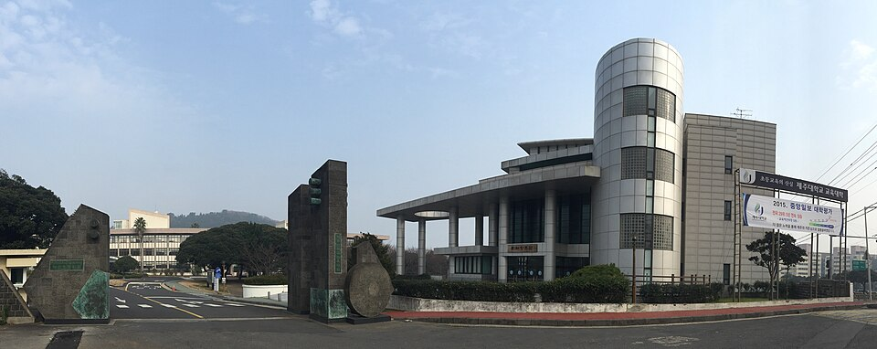

수시 원서를 넣고 나면 남은 시간표는 수능 하나로 모입니다. 이 글은 제주대학교 전형 소개가 아니라, 정시 반영비율을 "그래서 어느 과목을 먼저 하느냐"로 바꿔 읽는 글입니다. 같은 수능 점수라도 대학마다 과목 무게가 달라서, 목표 대학이 정해지면 남은 기간의 과목 배분도 달라져야 합니다. 고3 국어과외나 수학 수업 시간을 어디에 쓸지 정할 때 기준이 되는 숫자입니다.
| 계열 | 국어 | 수학 | 영어 | 탐구 |
|---|---|---|---|---|
| 인문·사회계열 | 30% | 20% | 20% | 30% |
| 자연·공학계열 | 20% | 30% | 20% | 30% |
| 자유전공 | 25% | 25% | 25% | 25% |
활용 지표는 백분위입니다. 체육교육과는 인문·사회계열과 같은 비율이고, 스포츠과학과·음악학부·미술학과 등 예체능 모집단위는 별도 비율을 씁니다. 2027학년도 대학입학전형 시행계획과 직전 연도 정시 모집요강의 수치가 같습니다.
제주대학교 표에서 가장 먼저 눈에 들어와야 할 칸은 탐구입니다. 인문·사회도 30%, 자연·공학도 30%. 인문계열에서는 국어와 같은 무게이고, 자연계열에서는 수학과 같은 무게입니다. 탐구를 "남는 시간에 돌리는 과목"으로 두면, 주력 과목 하나를 통째로 버리는 것과 같은 효과가 납니다.
탐구 두 과목은 평균 점수로 반영되므로, 한 과목이 무너지면 다른 과목을 아무리 올려도 절반만 회복됩니다. 남은 기간에는 잘하는 과목을 더 올리는 것보다 흔들리는 한 과목을 끌어올리는 쪽이 평균에 더 크게 작용합니다.
국어 30%, 수학 20%. 같은 만큼 점수를 올려도 국어가 1.5배 무겁게 들어갑니다. 수학 상위 문항 하나를 붙잡고 있는 시간이 있다면, 국어에서 흔들리는 영역(비문학 한 세트, 문법 몇 문항)을 먼저 안정시키는 편이 제주대학교 기준으로는 효율적입니다. 그리고 그 옆에 같은 30%짜리 탐구가 있다는 것을 잊지 않아야 합니다. 국어 + 탐구가 전체의 60%입니다.
자연·공학은 수학이 30%로 올라갑니다. 여기에 더해 미적분이나 기하를 선택하면 수학 환산점수의 10%가 가산됩니다. 공과대학 모집단위는 15%, 초등교육학부는 5%입니다. 과학탐구를 두 과목 응시하면 과학탐구 환산점수의 10%(초등교육학부 5%)가 추가로 붙습니다.
이 가산점은 "수학을 더 공부하라"는 뜻이라기보다 선택과목을 정할 때 쓰는 정보입니다. 이미 미적분·기하와 과학탐구로 가고 있다면 그 선택이 제주대학교 자연계열에서는 그대로 점수가 됩니다. 반대로 확률과 통계·사회탐구로 준비 중인데 자연계열을 노린다면, 가산점만큼의 거리를 다른 과목에서 메워야 한다는 계산이 서야 합니다. 다만 모집단위에 따라 특정 과목이 필수로 지정된 경우에는 가산점이 적용되지 않으니, 지원하려는 학과의 반영 영역을 먼저 확인해야 합니다.
제주대학교는 영어를 등급별 환산 백분위로 바꿔 넣습니다. 1등급 100, 2등급 95, 3등급 90, 4등급 85, 5등급 80까지는 한 등급당 5점씩 떨어집니다. 그런데 5등급(80)에서 6등급(70)으로 가면 10점, 그 아래로는 다시 10점씩 벌어집니다.
| 등급 | 1 | 2 | 3 | 4 | 5 | 6 | 7 | 8 | 9 |
|---|---|---|---|---|---|---|---|---|---|
| 환산 백분위 | 100 | 95 | 90 | 85 | 80 | 70 | 60 | 50 | 30 |
영어 반영비율이 20%이니, 1등급과 2등급의 차이는 전체에서 1점 남짓입니다. 모의고사에서 2~3등급이 안정적으로 나온다면, 영어에 시간을 더 붓기보다 그 시간을 국어(인문)나 수학·탐구(자연)로 옮기는 쪽이 이득입니다. 반대로 5~6등급 경계에 있다면 영어가 먼저입니다. 그 경계에서는 한 등급이 두 배로 벌어집니다.
제주대학교 수시 학생부교과 전형은 계열별로 수능 최저학력기준을 둡니다. 인문대·사회대·경상대는 2개 영역 등급 합 9, 생명대·해양대·자연대·공과대는 2개 영역 합 10, 사범대(체육교육과 제외)는 3개 영역 합 10, 간호학과는 3개 영역 합 11, 초등교육학부는 3개 영역 합 8입니다. 의예과는 수학 포함 3개 영역 합 6, 수의예과·약학과는 수학 포함 3개 영역 합 7입니다. 한국사는 필수 응시이고, 탐구는 두 과목 평균 등급을 씁니다.
여기서 읽어야 할 것은 숫자 자체보다 "몇 개 영역을 쓰느냐"입니다. 2개 영역만 보는 계열이라면 잘하는 두 과목을 확실히 올리는 전략이 서고, 3개 영역을 보는 계열(사범대·간호·초등교육)이라면 약한 과목 하나를 버릴 수 없습니다. 학생부종합 전형은 수능 최저학력기준을 적용하지 않습니다.
학생 수준에 맞는 선생님을 24시간 안에 추천해 드려요. 상담은 무료입니다.